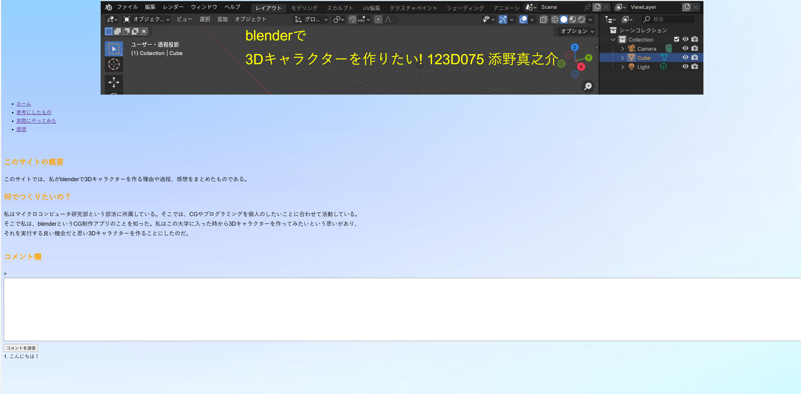
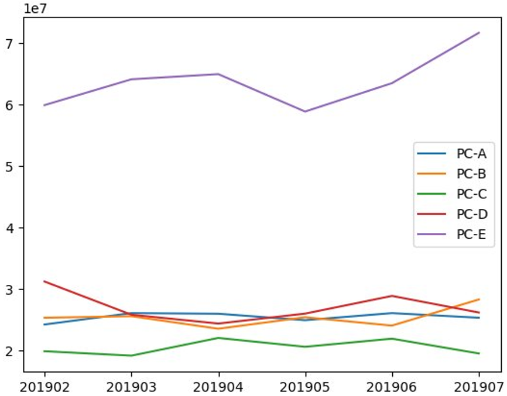
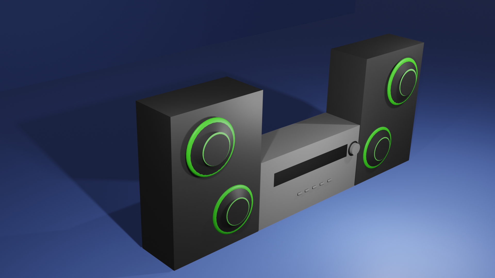
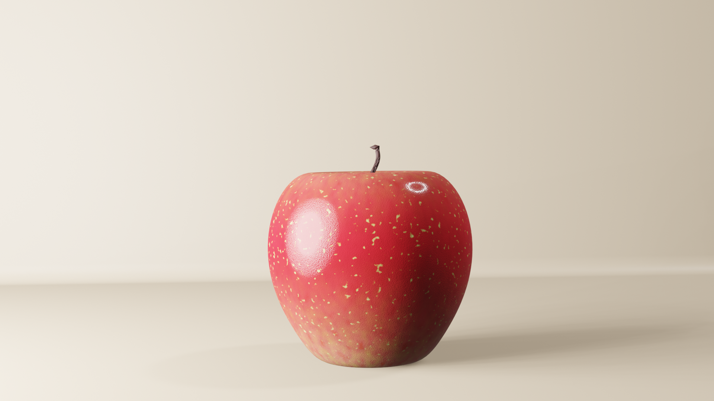
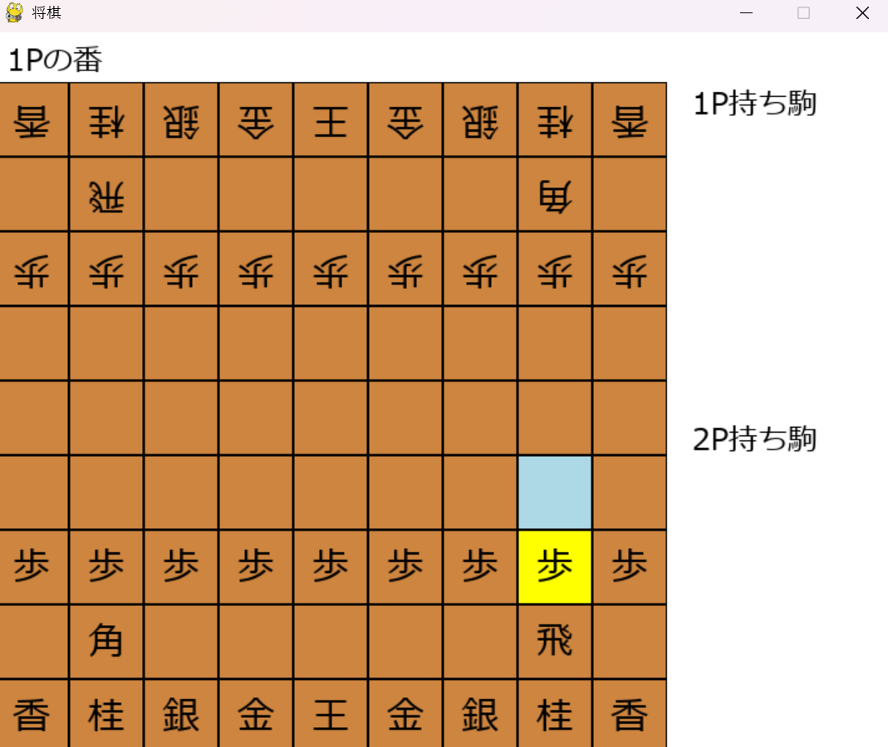

Portfolio
自己紹介
こんにちは！私は情報工学を専攻している大学3年生です。 プログラミングに興味を持ち、様々な技術を学びながら実践的な開発経験を積んでいます。 今はpythonの学習に力を入れており、チームでの開発も経験しています。 新しい技術への学習意欲が高く、問題解決に取り組むことが好きです。
主なスキル
プログラミング言語
- Python
- C
- HTML/CSS
- SQL
- R
使用しているレンダリングソフト
- blender
- Maya
詳細プロフィール
私について
私は幼い頃にコンピューターに興味を持ち、大学時代にプログラミングと出会いました。 大学では情報工学を専攻し、理論的な学習と実践的な開発の両方に取り組んでいます。 チームワークを大切にし、常に新しいことを学ぶ姿勢を持っています。
学歴・経歴
コンピューターサイエンスの基礎から応用まで幅広く学習。 特にソフトウェア工学、データ構造に力を入れています。
大学の部活動では、マイクロコンピューター研究部に所属し、部長として3年間活動しています。
自作PCを組み立る。ここで、ハードウェアの知識を深め、PCの構成やトラブルシューティングのスキルを向上させました。
部活動はソフトテニス部に所属し、中学から合わせ6年間活動しました。
目標・将来の展望
エンジニアとして社会に貢献できるソフトウェアを開発したいと考えています。 特にユーザーの課題を解決し、生活を豊かにするアプリケーション開発に携わりたいです。 技術力の向上はもちろん、チームでの協働やコミュニケーション能力も磨いていきたいと思います。
My skills
Skills
私の所属している大学の講義では、プログラミングやデータサイエンスの基礎から応用まで幅広く学んでいるため、様々な技術を身につけています。
主な作品：
-

これは、授業内で作成した自己紹介のWebサイトです。コメントを打てるようにしたりなど、授業での内容を応用したものを実装しました。
-

これは、授業内でGoole Colabを使用し自分のGoole Driveにアクセスし、Goole Drive内にあるファイルを参照し作成した、商品別の売り上げ推移を可視化したものです。(python)
マイクロコンピューター研究部に所属し、プログラミングやCGの技術の向上に取り組んでいます。 部長としての企画・運営、技術発表、共同プロジェクトの開発などを行っています。
主な活動内容：
- 週2回の部活動
- 学園祭での展示発表
- チーム開発プロジェクト
- 新入生向けプログラミング講座の講師
プログラミング言語を用いたアプリケーションやCG作品の制作を行っています。
主な作品：
-

作品1：この作品はコンポをテーマにしたものです。オブジェクトの切り出し、抽出などを駆使して作成しました。（blender）
-

作品2：この作品はリンゴをテーマにしたものでシェーダーディターの機能を活かして作りました。カメラ機能による光の加減を調節しました。（blender）
-

作品3：pythonを使用し駒のアシストがでる将棋のゲームを作成しました。現状、将棋ゲームでアシスト機能がでるアプリが自分が知る限り、そこまで多くなく、自分で作ってみました。（pygame）